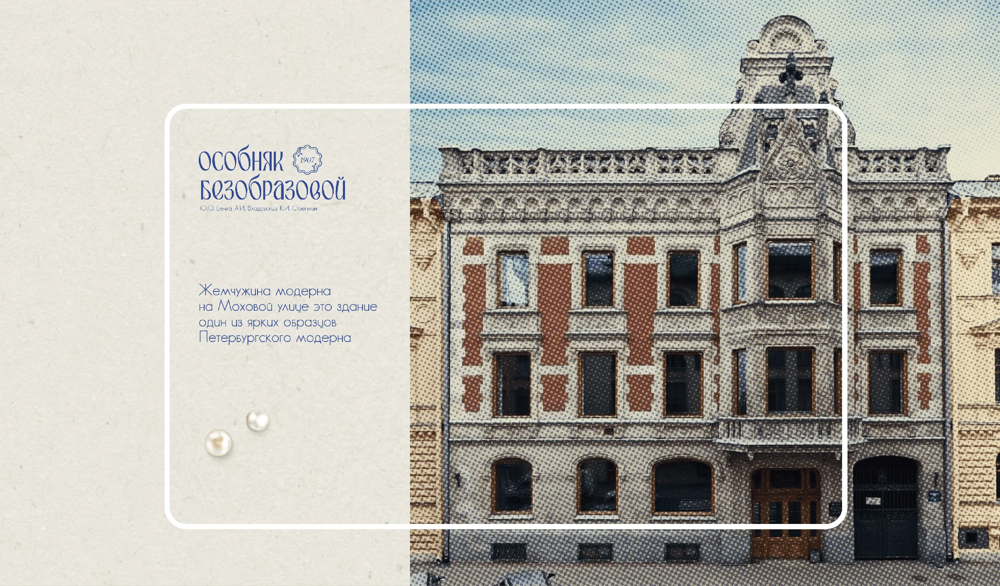
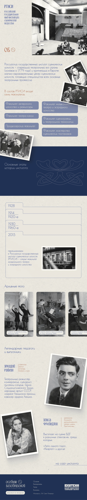
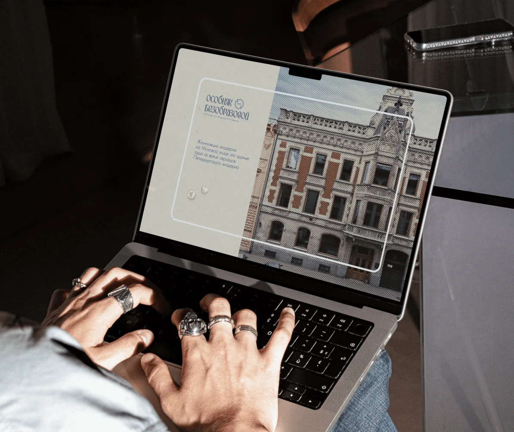

Планы этажей, фотогалерея интерьеров и 3D-модель помогают рассмотреть пространство особняка.

[о проекте]
История здания через цифровое повествование
Проект исследует историю, архитектуру и культурный контекст особняка Безобразовой в Санкт-Петербурге. Цель — заинтересовать пользователя историей здания и мягко привести его к желанию посетить экскурсию.
Генеалогическое древо раскрывает историю семьи Безобразовых и её связь с Саратовской губернией.
Архивные материалы рассказывают о связи здания с театральным образованием и историей института.
Материал собран в последовательный маршрут: от знакомства с фасадом к людям и современной жизни здания.




[результат]
Один маршрут для сложной истории
Архитектура, семейная история и жизнь института объединены в цельный цифровой рассказ, который помогает изучать особняк последовательно и без перегрузки.
следующий проектИнфодень NAUKA 2025
→